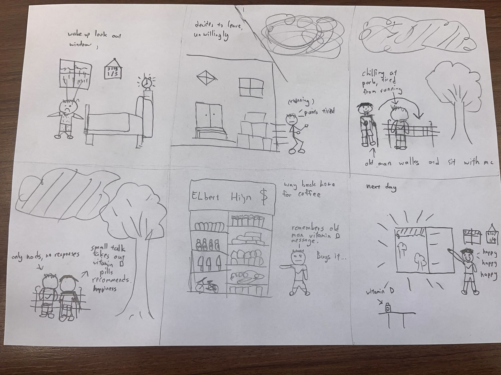

Design for Behaviour Change · short film · 2024
A film about
grey days
A short story about a grey morning, a conversation in the park and a reminder to get outside.

The project
From a conversation to a short film
For a Design for Behaviour Change hackathon in Intro to CreaTe, our four-person team made a short film around grey days and vitamin D. We developed the idea together and planned the story in a six-panel storyboard.
I directed how the shots should be filmed and acted in the film. Tzuling was the other actor and edited the video.
Storyboard & film
From the page to the screen
We filmed everything at the university, and I enjoyed looking for a spot that could pass for a room. I especially liked the opening. I wake up, walk over to the window and look out at the grey sky, with a chimney in the distance. Then we see the calendar.
I also suggested the camera angle for the shot where I arrive at the bench and sit down next to the older man. I enjoyed figuring out how we were going to film those scenes.
Made together
The team
Luís Antônio de Albuquerque Hollanda, Tzuling Lin, Precious Akpieyi and Mare Bouman.
We developed the idea together. I directed and acted; Tzuling acted and edited the film.